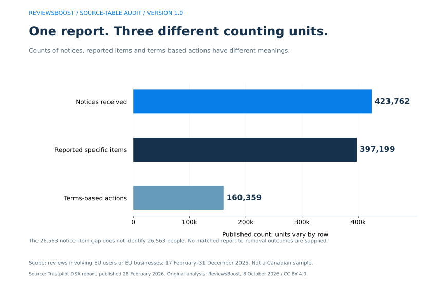
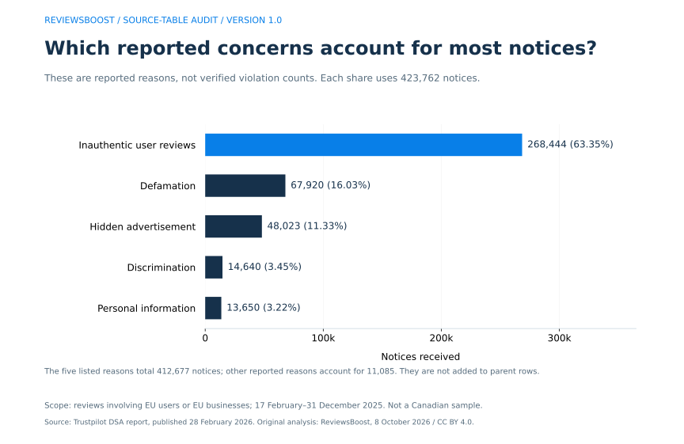
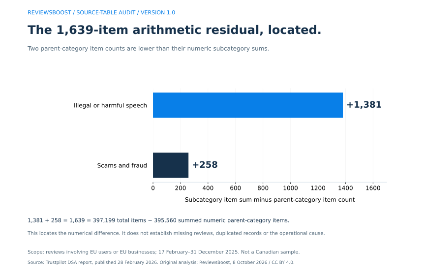
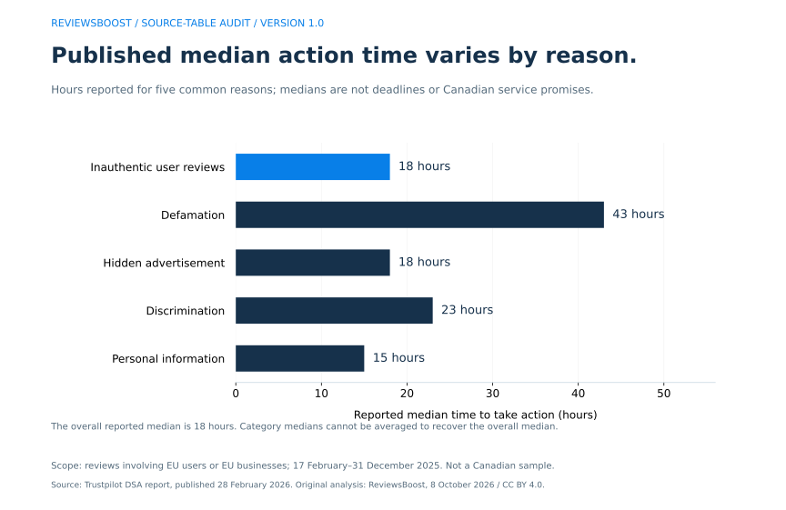

Trustpilot’s February–December 2025 transparency table reports 423,762 notices, 397,199 specific items of information and 160,359 actions under its service terms. Those are three different measures. Turning them into a headline such as “423,762 fake reviews reported” or “a 37.84% removal success rate” would claim more than this source establishes. Download Trustpilot’s report
We extracted all 92 source records, preserved blanks and original category labels, and audited the arithmetic across parent categories and their subcategories. Our new contribution is a reproducible compilation with four original graphs, explicit denominators and a reconciliation that locates a 1,639-item difference. It gives business owners and writers a precise reference for questions that a single moderation headline cannot answer.
This report does not provide a matched case-level removal success rate. It supplies notice, item and action counts for an EU-related reporting subset. We show their arithmetic ratios below without treating them as the probability that a Canadian business’s report will succeed.
Five findings from the 92-record audit
- 26,563 more notices than reported items. The source explains that multiple users can flag the same review. The difference is a count gap, not a count of repeat reporters or fabricated reviews.
- 63.35% of notices fall under the inauthentic-user-review subcategory: 268,444 ÷ 423,762. These are reported concerns, not confirmed fake reviews.
- 73.62% of terms-based actions sit in that same subcategory: 118,056 ÷ 160,359. The denominator is all reported terms-based actions, not all reviews or all notices.
- 1,639 items separate two ways of summing the table. The total item count is 397,199; the sum of numeric parent-category item cells is 395,560. Two subcategory reconciliations account arithmetically for the gap.
- The overall reported median time to action is 18 hours. That is a report-period median, not a removal guarantee. Five common reported reasons range from 15 to 43 hours in the source.
Underlying counts and times are Trustpilot’s disclosures. Shares and reconciliation calculations are our analysis. Every numerator, denominator and source field is included in the versioned dataset and provenance notes.
What period and geography do these statistics cover?
The identification file gives February 17–December 31, 2025 as the reporting period and February 28, 2026 as publication. The cover includes EU businesses reviewed by EU users, EU businesses reviewed by non-EU users, and non-EU businesses reviewed by EU users. January and the first part of February are outside this window. Source ZIP, identification and cover files
This is not a global count of every Trustpilot report. A Canadian business can fall within the stated scope when an EU user reviews it, but the report does not provide a Canadian subset. It cannot establish Toronto, Montréal, Vancouver or Ontario-specific flagging rates, action times or outcomes.
Notices, items and actions: three units to keep separate
Notices count reports. Specific items of information describe the reported content items in the table. Actions under service terms count the reported responses under Trustpilot’s rules. The source notes that one review can receive flags from multiple users; it also includes a small subcategory involving usernames and profile pictures, so the entire table should not be relabelled “review-text deletions.”



| Calculation | Result | Meaning |
|---|---|---|
| 160,359 actions ÷ 423,762 notices × 100 | 37.84 | Actions per 100 notices in the reported totals |
| 160,359 actions ÷ 397,199 items × 100 | 40.37 | Actions per 100 reported items in the totals |
Changing the denominator produces a different value using the same action count. Without linked case records, unique final outcomes, report timing and a defined eligible population, neither ratio answers “What is my chance of having this review removed?” The source total reports zero actions in its law-basis field; terms-based action does not establish that a court found the content unlawful.
What kinds of review concerns were reported?
The five high-volume reasons below account for 412,677 notices. Other reported reasons account for another 11,085, bringing the total to 423,762. We use subcategory rows for this comparison and do not add them to their parent-category counts.



| Reported reason | Notices | Reported items | Terms-based actions | Median hours |
|---|---|---|---|---|
| Inauthentic user reviews | 268,444 | 258,664 | 118,056 | 18 |
| Defamation | 67,920 | 66,769 | 13,685 | 43 |
| Hidden advertisement | 48,023 | 41,059 | 19,474 | 18 |
| Discrimination | 14,640 | 9,906 | 1,185 | 23 |
| Personal information | 13,650 | 11,557 | 5,457 | 15 |
The inauthentic-user-review row alone illustrates the denominator problem: 118,056 ÷ 268,444 gives 43.98 actions per 100 notices; dividing by its 258,664 reported items gives 45.64 per 100 items. We preserve those as count ratios, with no claim that either predicts an individual complaint’s result.
Where the 1,639-item difference appears
The parent-category notice cells sum to the published notice total. Their terms-action cells also sum to the published terms-action total. The numeric parent-category item cells do not sum to the published item total. Their sum is 395,560, leaving a 1,639 difference from 397,199.
| Parent category | Notices | Reported items | Terms-based actions | Median hours |
|---|---|---|---|---|
| Consumer information | 48,025 | 41,061 | 19,476 | 18 |
| Data protection and privacy | 13,650 | 11,557 | 5,457 | 15 |
| Illegal or harmful speech | 86,789 | 79,088 | 15,530 | 37 |
| Protection of minors | 1 | 1 | 1 | 2 |
| Public security | 858 | 505 | 47 | 7 |
| Scams and fraud | 270,491 | 260,431 | 119,474 | 19 |
| Violence | 3,898 | 2,867 | 324 | 6 |
| Not specified | 50 | 50 | 50 | 356 |
Within illegal or harmful speech, the four numeric subcategory item counts total 80,469, compared with 79,088 in the parent row. Within scams and fraud, the four subcategories total 260,689, compared with 260,431 in the parent. The differences, 1,381 and 258, add to 1,639.
| Category | Parent items | Subcategory item sum | Difference |
|---|---|---|---|
| Illegal or harmful speech | 79,088 | 80,469 | +1,381 |
| Scams and fraud | 260,431 | 260,689 | +258 |



If we use numeric terminal subcategories and the stand-alone “not specified” category exactly once, the item sum is 397,199. This explains how the reported total can be reconstructed from the table. It does not explain why those two parent rows use smaller figures. Possible overlap rules or reporting processes cannot be established from the supplied aggregated cells.
Two other details a clean-looking spreadsheet can hide
The trusted-flagger fields do not fully reconcile
The total row reports one trusted-flagger notice, zero trusted-flagger items and zero trusted-flagger terms actions. The intellectual-property parent row and copyright child row each show one notice, one item and one terms action in their trusted-flagger columns. Parent and child describe a hierarchy, so they must not be counted twice. Even at the parent level, the item and action sums are one while their grand totals are zero. We keep both source values and flag the difference.
A subcategory preserves an invalid date
The username/profile-picture subcategory labelled “Harmful and ilegal content” contains the source interval 2025-02-17/2025-12-32. Its median action-time cell is blank. The accompanying source note says its system cannot calculate the time from the dates retained for those notices. Our extraction keeps the original date string and null time; the report’s scope follows the valid identification and cover dates.
Blank fields elsewhere remain not reported, rather than becoming zero. Treating every empty template category as a measured zero or silently fixing the date would remove evidence that another analyst needs to evaluate the source.
How long does Trustpilot take to act on a report?
This source reports an 18-hour overall median. For the five common reasons plotted below, the source gives 18 hours for inauthentic reviews, 43 for defamation, 18 for hidden advertisement, 23 for discrimination and 15 for personal information. The total-row context specifies hours as the unit. Source table and time-unit note



A median describes the middle of the observations used for a reported measure. It is not an arithmetic mean, a guarantee for the next case, or proof that unresolved cases are represented in the same way. The table does not publish an end-to-end timeline for every business complaint. Compare reason categories as disclosed, with their counts and scope alongside the time figures.
How Canadian businesses can use the findings
A Toronto retailer, a Montréal subscription company or a Vancouver travel operator can use this audit to ask better questions about its own case. The counts do not supply local success rates. The useful lesson is to keep the review, each report, the platform’s action and any later status change in separate records.
- Save the public review URL and observed status. Record the date, content concern and evidence that can be shared appropriately.
- Track each report without creating a new review record. Two people flagging one review creates two reports about one item. This is a tracking distinction, not a recommendation to coordinate multiple flags.
- Record the actual decision and action. “Reported,” “under investigation,” “taken offline” and “reinstated” are different observations. Do not call a report submission a completed removal.
- Check later status before closing the case. Trustpilot’s help guidance explains that taking a review offline can be reversed after new documentation or edits. Trustpilot’s flagged-review process.
Trustpilot’s April 23, 2026 update says businesses can no longer reply directly to flagged-review decision emails. Use the appeal link in the decision message, explain the disputed assessment and attach supporting documents. This current workflow should not be replaced with older instructions to reply to the email. Trustpilot’s decision-email update.
Our blank outcome ledger can help track observations without inventing a success-rate dataset. For managed assistance, send the Trustpilot review to ReviewsBoost. If the concern is on Google instead, use the Google evidence builder; platform rules and reporting routes should be matched to the actual service.
Questions about Trustpilot review reporting statistics
Were all 423,762 notices reports of fake reviews?
No. The inauthentic-user-review subcategory contains 268,444 notices. Other reasons include advertising, defamation, discrimination and personal information. The report also covers some usernames/profile pictures. The category labels do not establish which allegations were substantiated.
Were 160,359 reviews permanently deleted?
The table labels 160,359 as actions on the basis of service terms. That field does not establish a count of unique permanently deleted reviews. Trustpilot describes taking reviews offline and possible later reinstatement in its flagged-review guidance.
Is 37.84% the chance that my Trustpilot flag will succeed?
No. It is the total action count divided by the total notice count, multiplied by 100. Notices can concern the same item, and the table has no linked record of the outcome for each notice. Your evidence, reporting reason and the platform’s decision require a case-specific assessment.
Are the median times Canadian removal timelines?
No. They cover the stated EU-related subset and past reporting period. The source supplies no separate Canadian median, no maximum response time and no removal deadline for Toronto, Ontario or another region.
Does the 1,639-item difference prove Trustpilot lost reviews?
No. It is the difference between aggregate cells and can be located in two parent-versus-subcategory comparisons. The source does not provide an operational explanation or underlying records. A discrepancy in arithmetic should not be promoted into a claim about missing customer reviews.
Can I report a review just because it is negative?
A report should identify a relevant guideline concern and supporting evidence. Trustpilot’s published process assesses whether a review violates its rules and explains that a review can remain online when no breach is established. A negative star rating alone is not a substitute for that evidence.
Method, originality and limits
- Select the source. Use the downloadable DSA report linked from Trustpilot’s legal page on October 8, 2026. Extract the notice, report-identification and cover CSVs. Pin the original file hashes so a changed source requires a fresh audit.
- Preserve the hierarchy. The notice CSV supplies 92 records: a total, 15 parent categories and their subcategories. Keep source codes, logical record numbers, nullable fields and original period strings. Parent and child rows are not additive.
- Separate metrics. Keep ordinary notice/item/action fields apart from trusted-flagger fields. Do not combine law-basis and terms-basis counts or infer that the same columns represent disjoint events.
- Calculate only labelled measures. Shares identify their numerator and denominator. Reconciliation subtracts sums of numeric cells; it does not turn blanks into observations of zero. A terminal-row sum is checked separately.
- Expose discrepancies. Retain the item hierarchy difference, trusted-flagger mismatch and invalid source date. Do not revise source values merely to make every total add up.
- Verify the artifacts. The downloadable Node audit checks every exported CSV cell against JSON, source fingerprints when the raw cache is present, terminal sums, the reconciliation and the preserved anomalies. The Python builder reproduces the extraction from the official ZIP.
Trustpilot produced the underlying disclosures. ReviewsBoost contributed the normalized extraction, original category reconciliation, denominator analysis, figures and reproduction code. This is secondary analysis of a platform self-report. We did not survey Canadian businesses, inspect internal moderation records, independently establish report accuracy or measure client outcomes.
We do not claim these source numbers first appeared here. The particular compilation and reconciliation are our work; a limited search for the reported totals cannot establish that no other publication has analysed them. Reports with different periods, scope or field definitions should not be pooled into a year-over-year success-rate comparison.
Commercial interest: ReviewsBoost provides review-removal and reputation-management services. This dataset contains no proof of our own removal success rate, no client-performance figures and no evidence of a ranking or revenue effect.
Download, reproduce and cite the research
- Complete 92-record extraction, CSV · Data, assumptions, source notes and hashes, JSON.
- Parent/subcategory reconciliation, CSV · Machine-readable CSV column definitions.
- Source extraction and dataset builder — Python standard library, with network access to the official source ZIP.
- Independent CSV and arithmetic audit — run
node audit-trustpilot-notices.mjsbeside the downloaded CSV and JSON. - Four-figure reproduction script — run
python plot-trustpilot-notices.pybeside the JSON with Matplotlib installed. - BibTeX citation · Citation File Format record.
The builder writes a raw source cache in research-sources for local verification; that cache is excluded from this website’s published build. Its SHA-256 fingerprint for the notice CSV is dbaf2d134b76e450dbeaca791fa0f8cfcde21e5e1c9471ec832508a4a4a16882. The public extraction preserves numeric fields and source labels, while the original ZIP remains available from Trustpilot.
ReviewsBoost Editorial Team. (2026, October 8). Trustpilot review reporting statistics: a 2025 notice-table audit (Version 1.0). ReviewsBoost. Permanent article and dataset reference. Attribute underlying counts to Trustpilot and retain the EU-related February–December 2025 scope.
Our original compilation, calculations, scripts and figures are available under CC BY 4.0. External source material retains its own rights. Identify ReviewsBoost, link this article and the licence, and note changes when reusing our work. Report corrections through the editorial correction process.
Primary sources, checked October 8, 2026
- Trustpilot legal publications — source landing page and downloadable DSA report link.
- Trustpilot DSA Transparency Report, published February 28, 2026 —
4_notices.csv,1_report_identification.csvand cover CSV inside the archive; February 17–December 31, 2025 scope. - Trustpilot Help: what happens after businesses flag reviews? — reporting, investigation, offline status and reinstatement distinctions.
- Trustpilot: changes to flagged-review emails, April 23, 2026 — current appeal link and decision-email workflow.